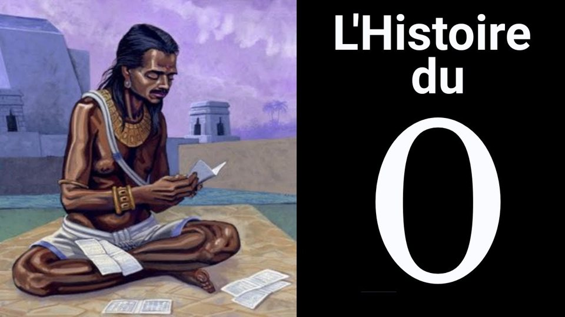

12:48Les origines du zéro — de Babylone à Fibonacci
Babylone, les Mayas, l'Inde : comment un signe de position est devenu un nombre, avant de conquérir le monde.
Sources : Bodleian Library (manuscrit de Bakhshālī), Plofker et al., M. Launay, Le grand roman des maths.